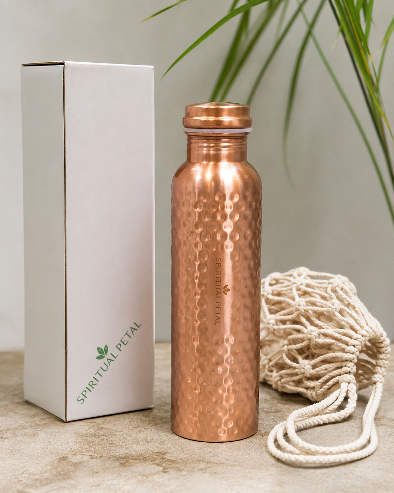
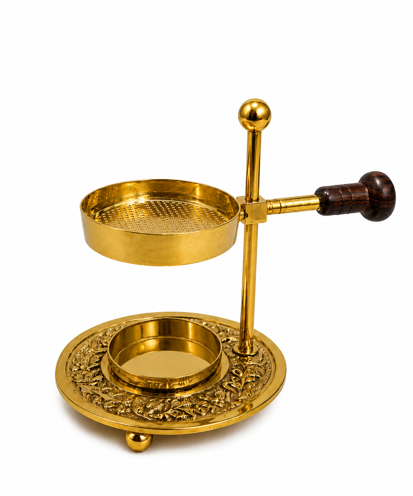
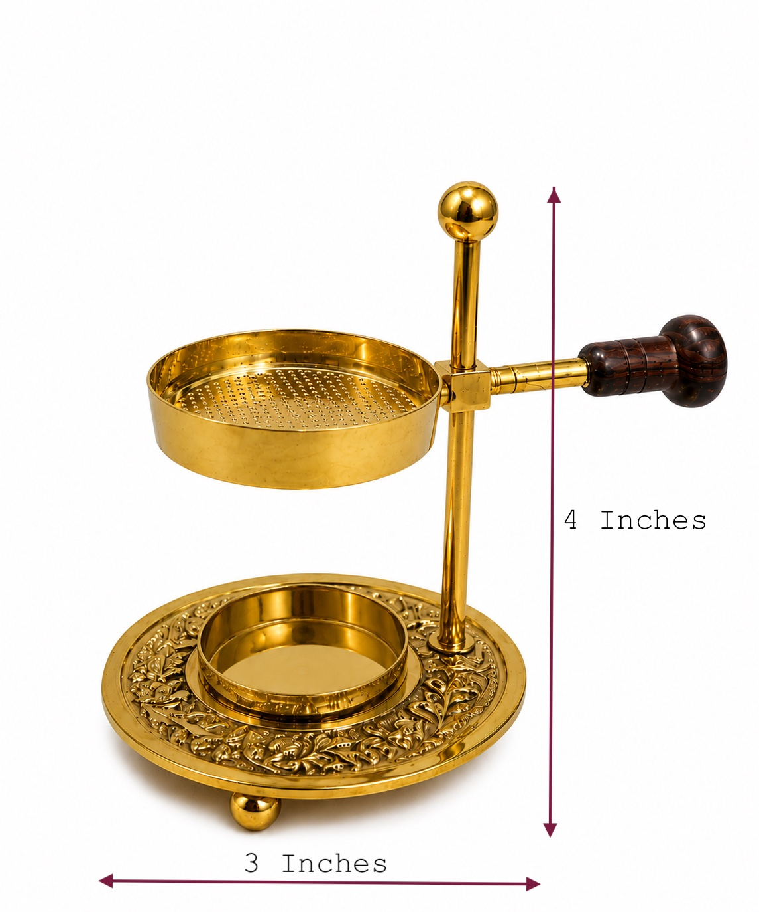
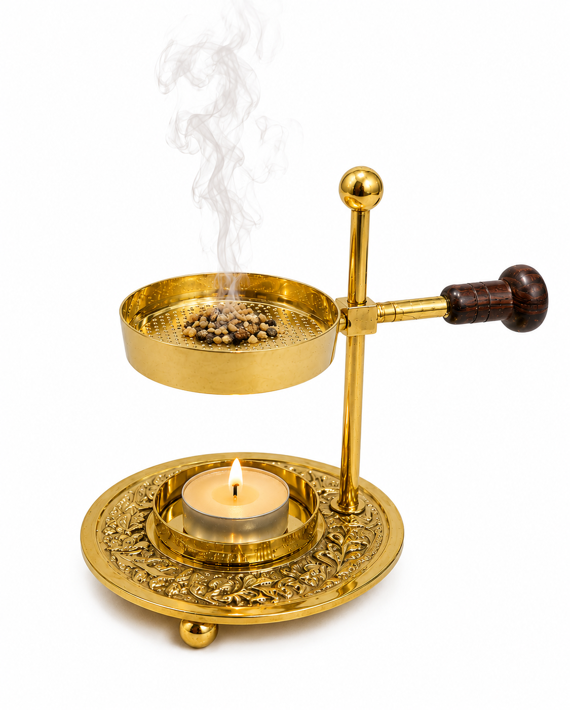

EVERYDAY WELLNESS RITUAL
Hammered Copper Water Bottle
A beautifully textured copper bottle with a fitted copper lid and cream macramé carry bag.
View bottle details →Products from India · SpiritualPetal
Discover thoughtfully selected products from India inspired by traditions that have been part of everyday life for generations — from hammered copper vessels to ritual incense accessories.

The SpiritualPetal Collection
Explore the product pages for detailed usage guidance, care instructions, traditional context and product photography.
A beautifully textured copper bottle with a fitted copper lid and cream macramé carry bag.
View bottle details →
An ornate gold-toned burner with a perforated upper tray, candle area and wooden side handle.
View burner details →Why SpiritualPetal
We present products connected to Indian materials, craftsmanship and household or ritual traditions.
Our copper vessel story reflects traditional Ayurvedic and Indian practices. Traditional use is not a substitute for medical advice.
Useful pieces for home, personal routines, prayer spaces, gifting and everyday rituals.
From India · Inspired by tradition
India has a long history of using copper vessels in homes, kitchens and traditional wellness practices. SpiritualPetal celebrates that heritage through practical products designed for contemporary homes.
Our goal is simple: make traditional objects easy to understand, care for and enjoy — without losing the character that makes them special.
In traditional Ayurvedic practice, water stored in copper vessels has been valued as part of certain daily routines. This is a description of traditional practice rather than a medical claim or treatment recommendation.
Learn how to use & care for your bottle →See the products
The website uses the product photographs supplied for SpiritualPetal, keeping the actual product appearance at the centre of the presentation.



SpiritualPetal
Explore the individual product pages for practical instructions, care guidance and traditional context.
Explore products →